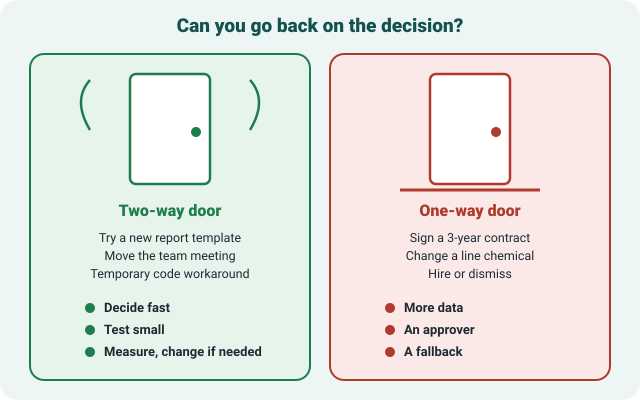

K3 · Problem solving and decision making › Level 4 Proficient
Decide with incomplete information and state your assumptions
This lesson completes Sheet 2: Decision sheet. Print template. It builds on Describe a problem with two options (Level 2).
1. Objectives
- Classify a decision as easy or hard to reverse, then choose how much information you need.
- Write a decision sheet: assumptions, change-your-mind signals, a fallback, a review date.
2. Retrieval warm-up
- An impact map has three things to look for. What are they?
- Why should you warn about delays when you present a proposal?
Answers
- Knock-on effects, loops, delays.
- So people do not drop a good solution when nothing changes in the first week.
Review: See the whole system.
3. Explanation
As a senior, you often have to decide before you have all the data. If you wait for everything, it is usually too late. The skill is deciding with discipline.
Step 1. Classify the decision.
- Easy to reverse: if it is wrong, you can go back at low cost. Example: trying a new report template. Decide fast, test small.
- Hard to reverse: if it is wrong, it is costly or cannot be fixed. Example: signing a 3-year contract, changing a chemical on a production line. You need more information and an approver.
Step 2. Write down your assumptions. Write what you believe is true but have not checked. Add your confidence: high, medium or low.
Step 3. Set change-your-mind signals. Answer: "If I see what, will I change this decision?" Write it in advance, while you are still objective.
Step 4. Imagine failure. Suppose the decision has failed 3 months from now. What could the reasons be? Each main reason needs a fallback.
Step 5. Set a review date. Write a specific date to compare results with your assumptions.

Be clear when you present. Separate three parts: what you know, what you assume, and what you do not know. Approvers trust you more because they see the real risk.
Sheet 2. Decision sheet
- What decision, by whenEasy or hard to reverse.
- Known · Assumed · UnknownEach assumption has a confidence level.
- Change-your-mind signalsWhat would make you change course.
- If it fails, why?Each main reason has a fallback.
- Review dateCompare results with assumptions.
Being wrong is less dangerous than being wrong and learning nothing. A decision sheet helps you learn from both right and wrong calls.
4. Workplace example
Hypothetical scenario. Daniel is a senior engineering lead at a software company. A client needs a feature before the 20th. A code library the team uses has a bug, and its developer has not replied.
He has two choices. Wait for the bug fix, or write a replacement section himself, taking 3 days.
He classifies it: writing a replacement is easy to reverse. When the fix arrives, the team can remove it.
He writes the sheet. Assumption: the replacement does not affect the payment module (medium confidence). Unknown: when the fix will arrive. Change-your-mind signal: if testing finds a payment error, stop and tell the client at once. Fallback: deliver without the minor features and agree a date to add them. Review date: the 15th.
On the 15th, the tests pass. The team delivers on time.
Why this works: he does not wait for full information on an easy-to-reverse decision. He writes the change-your-mind signal first. The client and his manager can see the risk clearly.
5. Practice
Hypothetical scenario. You are a senior buyer for a restaurant chain. The current vegetable supplier often delivers late. A new supplier offers prices 8% lower if you sign a 2-year contract. You have never worked with them.
Classify the decision. Write a sheet: assumptions, change-your-mind signals, one reason it might fail with a fallback, and a review date.
Hint 1
Is a 2-year contract easy to reverse? Can you turn it into a decision that is easier to reverse?
Hint 2
What if you placed part of the orders with them before signing long term?
Model answer
- Classify: a 2-year contract is hard to reverse. Break it into a small step: order 30% of vegetables for 2 branches for 6 weeks.
- Assumption: the new supplier delivers on time (low confidence, no data yet).
- Change-your-mind signal: more than 2 late deliveries in 6 weeks, or vegetables failing the incoming check.
- If it fails, why? They do not have enough vans at peak hours. Fallback: keep the current supplier for the other 70%.
- Review date: end of week 6, before proposing a long-term contract.
(The figures are hypothetical.)
6. Self-check
Choose an answer. Every option has an explanation.
Question 1. Which decision is hardest to reverse?
-
Not quite. If it is wrong, you change it back next week at almost no cost.
-
Not quite. This is a small test you can stop at any time.
-
Correct. Correct. A mistake could damage products, affect safety and be hard to undo quickly.
Question 2. When should you write your change-your-mind signals?
-
Correct. Correct. Writing them first stops you from making excuses when results turn bad.
-
Not quite. By then it is easy to find reasons to keep the old decision.
-
Not quite. Instinct is easily swayed by the effort you have already put in.
Question 3. What is the best way to present a decision to your manager?
-
Not quite. Hiding assumptions hides the real risk and costs trust when something goes wrong.
-
Correct. Correct. The approver sees the real risk and can decide how much to accept.
-
Not quite. For many decisions, waiting for full information means deciding too late.
Question 4. You must choose a new supplier for a long contract but have no data on them. What is a sensible step?
-
Not quite. A hard-to-reverse decision based on a low-confidence assumption is a big risk.
-
Correct. Correct. You turn a hard-to-reverse decision into a small step you can undo.
-
Not quite. Not deciding is also a decision, and it has its own risks.
7. Reflection
- The last time you waited for more information, was that decision really hard to reverse?
- Which part do you most often forget: assumptions, change-your-mind signals, or the review date?
8. Real-world application
In the next 7 days, choose a decision you are weighing. Complete Sheet 2. Put a reminder in your calendar for the review date, then record the result on the sheet.
9. Metadata
| skill | K3 · Problem solving and decision making |
|---|---|
| level | Level 4 · Proficient |
| group | N4 |
| framework_map | WEF: Analytical thinking; CSfW: 3b Make decisions; 3c Identify and solve problems; SkillsFuture CCS: Decision Making; Problem Solving; NACE: Critical Thinking; LifeComp: L2 Critical thinking (reference only) |
| original | Vietnamese version |
| updated | 2026-11-14 |
Finish the lesson
Mark it as done and the site suggests reviews after 1, 3 and 7 days. The data stays on your device only.
Suggested reviews: